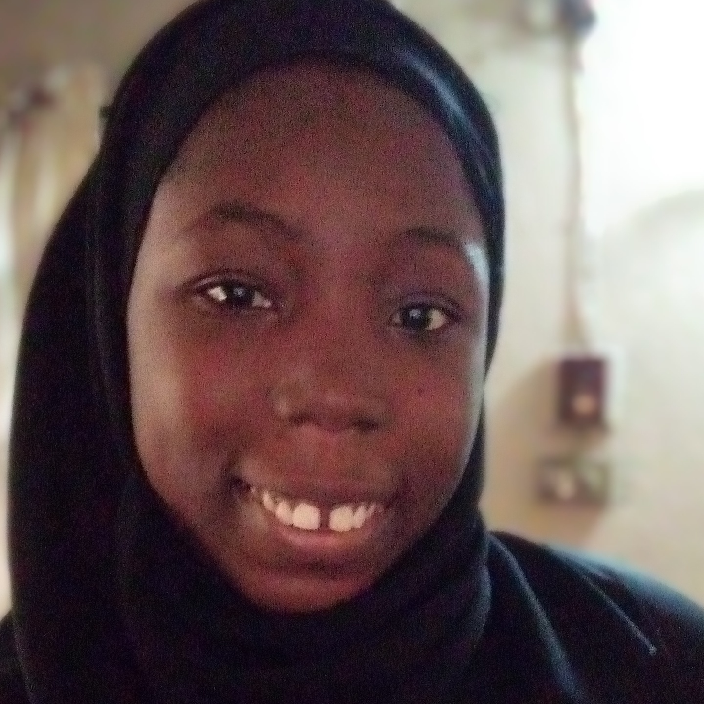

|

|
Aishat Dosunmu
Lagos, Nigeria
Morenikheji aishatdosunmu@gmail.com |
|---|
Hi there! My name is Dosunmu Aishat, Welcome to my personal page. I was born on the 5th of November 1999. I was born and bred in Lagos Nigeria.
I am Currently a Student Of the University of Lagos and the Department of Employment Relations and Human Resource Management.
I am also a National Diploma level graduate of the Yaba College of Technology and the Department of Business Administration and Management.